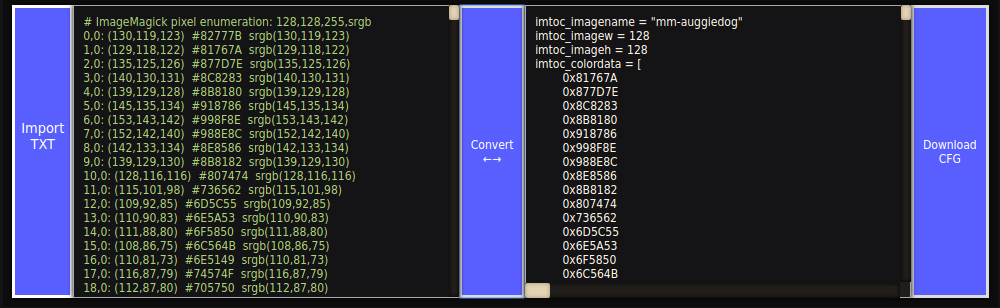

You can steal fonts with this

and impress your friends with your super pixelart ability.

Transforms an image converted to text with ImageMagick into an executable format for Sauerbraten
Data Reader
paste here the cubescript that will handle the color data (or use the default by RaZgRiZ)
Useful online tools to convert image to txt:
https://magick.imagemagick.org/MagickStudio/scripts/MagickStudio.cgiYou can now send larger text files with less time consuming than before.
The text fields have been removed, you can do the whole process just by clicking the two buttons.
Check the old guide below, it still works the same way:
First of all you need to choose one of the online tools to convert your image to a txt file (they all use ImageMagick to convert).
After downloading the txt file, you can import or paste it into the left text field (If you paste, the image name will not be saved).
The text field on the right is where the result will be stored after you click Convert, you can download the cfg (result) file by clicking on the last button.
This field is dedicated to the CubeScript that is responsible for transforming the hexadecimal values into cubes ingame.
It is added to the end of the output, after converting.
if you want to make your own 'Data reader' (not necessary), the important variables are:
$imtoc_imagename
$imtoc_imagew
$imtoc_imageh
$imtoc_colordata
(and the alpha value has 10 characters, a normal color only 8)
After putting the cfg file in the sauerbraten folder and running it ingame...
Assuming you're using the data reader made by RaZgRiZ...
/drawloadimg the name of the image should be the cfg name you downloaded earlier.
/drawreset will reset the 'pixel id' value to 0, you must do this every time you start a new image.
/drawundo this subtracts the width value from the 'pixel id', then you can re-draw this line.
/drawrow this is the command that will actually draw the pixel/cube.
You can steal fonts with this
and impress your friends with your super pixelart ability.
IMTOC by @SalatielSauer